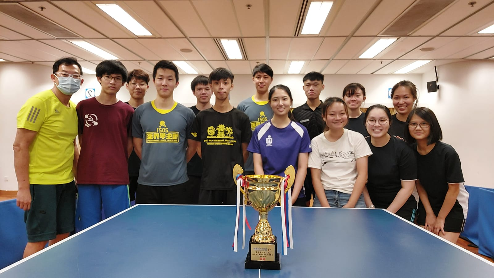
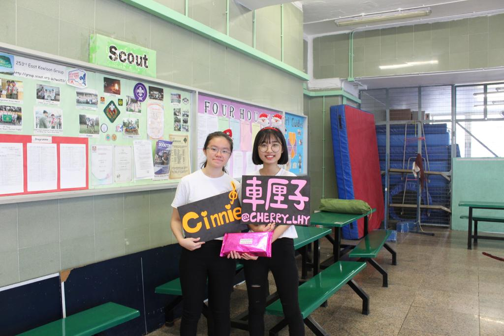

Cinnie She
“Life must be lived and curiosity kept alive.”
“Life must be lived and curiosity kept alive.”
Final Year HKUST student in RMBI + COSC Major
Hi! I am Cinnie. Thank you for coming to my personal website. This website is coded from scratch by me with self-learnt HTML5, CSS3, and Bootstrap5, and it is responsive! I’m currently a final year student in HKUST, majoring in Risk Management and Business Intelligence (RMBI) & Computer Science (COSC). Feel free to contact me any time and I look forward to seeing you!
I like accepting challenges and tackling problems that could be systematically solved. That’s why I was interested in mathematics related electives when I was in secondary school (I took BAFS, Economics, Physics, and M2 in Form 4-6). In university, I got in touch with Python in Year 1, I had fun with it and I became enthusiastic in programming thereafter.
I am passionate about exploring the tech world, from data analytics, to web and mobile app development, and to machine learning and artificial intelligence. I have participated in 2 internships and 2 researches in the Machine Learning field (Computer Vision and NLP). For my career path after graduation, I am striving to pursue a career as a Machine Learning Engineer.
I am an introvert, but it doesn't mean that I am weak in teamwork. One of my believe is that great leaders are those who do the most. Communicate through actions but not words sometimes is the best way to push the team to a greater success. Of course, verbal communication is necessary too, and I believe I am able to handle that as well. In many of the course projects, I used to guiding the team on what to do, how to accomplish, when to finish, and we have done a great job in it. Last but not least, I am responsible in my own job, and am hardworking. I always strive my best to accomplish the tasks given to me.
I graduated from Po Leung Kuk No.1 W.H. Chung College in 2019 and have been receiving education in HKUST since then. In my Year 1-3 studies, my CGA was 3.435. Here are the courses that I have taken in the past 3 years as a RMBI student.
In Year 2 Winter Semester, and during the same year Spring Semester, I have worked as an intern in PanopticAI Limited and viAct.ai with jobs related to AI.
This internship started after I attended a sharing session about AI Industry Career Opportunities and connected with one of the speakers, Hugo, through Linkedin. He appreciated my attitude to learn and strive for opportunities, so he had given me a chance to work as a free intern given that I had no background in Computer Science and that they only hire experienced engineers.
The task that they had given me is about creating a workflow that regularly takes in a directory of images from the local computer into an AI classification model and outputs the probabilities of a person wearing and not wearing a helmet. This workflow was created with the Python library Prefect, you could check out the GitHub repository for this task here: Go to GitHub.
Before they gave me this task, I had no idea what Onnx model and Prefect are, and I had never tried loading and saving files in local computers through code. I have learnt about how to create a workflow, how images are pre-processed, and how to use different libraries all by myself during the internship. I found this internship meaningful since it had given me an opportunity to learn and practice, and I have learnt more about some common practices, including managing a GitHub repository, and creating a readme markdown file.
This internship experience is rewarding. They have given me chances to learn about different AI Computer Vision topics, including image segmentation, human detection/human pose estimate, multiple object tracking, depth estimation, accurate temperature measurement, and thermal image-based method. Through the journey, I have read through some research papers in different areas which have given me some insights on the recent AI industry development. And I have also been given a chance to train an AI classification model with a new synthetic dataset. On the technical side, I have really learnt a lot.
For the non-technical part, during the internship, I was able to see the difference between university programming, and business programming. In university, most projects are guided with instructions and there are lots of assumptions. However, in a real business situation, we have to consider all these assumptions too. Hardware, environmental parameters are also in the considerations during the product development. Besides that, during the internship, I was able to see how teams work together, having regular meetings, how the CEO leads the company and teams, and how they discover new directions for product development. I was able to find my way to contribute in work, and it was a fruitful learning experience for me.
I have joined 2 Undergraduate Research Opportunities Program (UROP), the INSPIRE Women in Technology Program organised by Credit Suisse, the FDM Group Women in Tech Bootcamp, and participated in 2 Case Competitions in the past 3 years of my university life. Besides, for projects that I have done, please visit 'My Projects' page.
Supervised by Professor Huang Allen Hao and Professor Yang Yi, and with the help of Postgraduate students Miss Hui Wang and Mr. Srijith Kannan, I have completed the research on the evaluation of FinBERT performance for multi-class ESG classification. The project included longer than one month of data labelling process, and another month for model fine-tuning process. It was a valuable experience which allows me to write up data preprocessing, training, fine-tuning, and evaluation code for as many as 11 machine learning models. These ML models include Naïve Bayes, Logistic Regression, Linear SVM, Random Forest, MLP, CNN, LSTM, Bi-directional LSTM, GRU, BERT, and FinBERT, where FinBERT is a Large Language Model developed this year that adapts to financial texts.
Through the project, besides the ML part, it was also a fresh experience to be labelling such a huge amount of data. I was responsible to ensure the data label quality, and it was a tough work. However, I enjoyed it a lot because I could make use of this opportunity to force myself reading company's CSR reports and understand more about different company's ESG operations.
Here is a link to the code and report I have written for this research project: Go to GitHub.
I was mentored by Dave and Wakas from Credit Suisse throughout my project on creating a Task Tracking Mobile Application called Challenger. Here is a simple demo for the product of this 10-week mentorship program: Go to YouTube. And you can also check the details out in GitLab: Go to GitLab.
In the beginning of the program, I knew nothing about software engineering. It was my first time to dive into this area, and I had no idea on how to use JavaScript, React/React Native, Expo, GitLab, and SQLite. Everything started from scratch, starting from learning about sprint, for instance how a project is managed, refreshing my memory on Git and learning about GitLab (e.g. how to do the merging, how to view logs, etc.). Also, I had tried to use CI/CD pipeline with the help of Waqas so that I could have my application published automatically after pushing it to the remote repository.
Apart from these, I have gone through some basics of JavaScript and ES6, which is an entirely new language for me, learning from something as simple as logging something on the console, to looking at concepts like Promises and Async Functions, etc. Besides, I think trying with mobile app development is also very exciting. Using Expo and React/React Native to construct an application, seeing what I have coded on a real smartphone screen is really satisfying. All the concepts like components, states are so new to me, so when I succeed to use the useState function to store the error message for example, and make it pop up and refresh on the screen, I was so happy, and I really like that feeling of satisfaction. In addition, I have also tried with Expo SQLite to store for example username and password, and also the tasks. It was a good experience to try understanding how data is stored, how queries are made, and how to use callbacks to re-render the application.
From a non-technical perspective, I have received a lot of career advice from Dave and Waqas. Able to know how to prepare to become a software engineer is rewarding. And I was also able to see them doing the debugging for me during the live Zoom meeting, which was really beneficial to my learning.
The Tech Bootcamp organised by the FDM Group taught the basics of Python, for example conditionals, arrays, dictionaries, etc., in a small class environment.
On the technical side, it has consolidated my understanding and enhanced my proficiency in Python through a large amount of exercises every day. I was able to get used to solving problems, and think logically to turn ideas into codes. At the end of the week, I was able to build the hangman game from scratch without any assistance from the trainer. You can see how it looks on YouTube: YouTube. And can check the details of the code on GitHub: Go to GitHub. It was built with the use of a turtle library.
On the non-technical side, I have really learnt a lot. First of all, it was my first time to stay in an office for the whole day since the previous internships were all work from home settings. I was able to feel what a working environment is like, see how people collaborate and communicate with one another, and try embedding in it. Secondly, since this was a Bootcamp targeted at graduated people, I was the only undergraduate in this Bootcamp. Hence, meeting, learning, and communicating with people in a different age group was a fresh experience for me. They have different kinds of experience and passions, for example one of them is planning her own mobile application, and another one is working in a law firm. Furthermore, my confidence in presentation was enhanced. At the end of the week, I had a presentation in front of all the people in the office without much preparation for that. Being an introverted person, it was my first time to enjoy a presentation. We played the hangman game together, and the atmosphere was good. This presentation has really taught me about my ability to present my ideas to others, which I used to struggle with a lot before. I felt lucky that I have plucked up my courage to apply for this Bootcamp.
Supervised by Professor LEE Yi-Kuen and with the help of Mr. Ishtar, I have completed the UROP Program successfully in my Year 1 summer. Due to my limited knowledge and skills in Year 1, I was responsible solely for data collection using their developed Android App. The app functions similar to an accelerometer and a gyroscope, and I used it for taking related data on different human activities.
However, I am passionate about knowing more about AI and Machine Learning technology. Therefore, I searched for YouTube machine learning courses so that I could try to build the machine learning model for human activities classification myself. I gained some basic knowledge on deep learning, neural network, computer vision, and NLP using Tensorflow. With this effort, I still face quite a lot of difficulties in creating the model. I sought advice from my supervisor, and they gave me guidance on preprocessing the data, and gaining insights from it. Unfortunately, I was unable to finish the model before the program period ended, but I still gained valuable experience from it.
Here is a link to the course video I've watched on YouTube: Go to YouTube.
I have worked with my friends in HKUST to develop a comprehensive and strategic proposal for Avenue, which is a leading privately-owned asset management company based in Hong Kong. The target of the proposal is on leveraging technology to understand the behaviour and fulfil user-friendly expectations of platform users along the customer journey, form partnership, educate and attract new investors.
We did research on how technologies could be leveraged in the business and learnt about business planning, NLP applications in Robotics Advisor, and related topics.
I have worked with one of my RMBI friends, and two newly met HKUST friends from business school in formulating FinTech solutions for Tap & Go by HKT. We did a lot of research on the use of technologies in digital wallets. In the end, we came up with ideas such as micro-investment features, expense tracking, security measures, virtual assistance, and loyalty programs. I have learnt about recent applications of AI and machine learning in personal financial sectors, some industry insights, and of course, cooperation skills.
In Year 2 Summer, I have self learnt Java in Coursera to learn more about Object-Oriented Programming in order to improve my skills in software engineering.
Through this course, I have learnt about the basics of cryptography, implementing Caesar Cipher and Vigenere Cipher, generating random stories, and analyzing web server logs with the use of Java Array, ArrayList, and HashMap Data Structures.
Through this course, I have learnt about fundamental Java Syntax and Semantics, Strings, reading CSV Files, and done an honor project on turning RGB images into black-and-white images.
Cantonese (Native)
English (Fluent)
Mandarin (Fluent)
Japanese (Introductory ~ Intermediate)
Python
PySpark
C++
Java
SQL
Excel
AWS
Tensorflow
Keras
HTML5
CSS3
JavaScript
Bootstrap 5
Git/GitLab/GitHub
React
SQLite
R
Mips
I am currently a team member of the HKUST Table Tennis Team and have represented HKUST in the USFHK Table Tennis Competition and Hang Seng All Schools Championships. It is really fun to play table tennis with my friends and hang out with people with the same hobby!
I was responsible for managing the financial records and cash of the club, assisting the functions of it, such as helping out in team recruitment, club trainings, and promotion activities.
Apart from coding, and playing table tennis, I also like to write my own songs in my spare time. I've joined the Christmas Singing Contest with my classmate held in my secondary school with my original song! And we ended up getting the 2nd runner-up in group singing! It was an unforgettable experience to sing in front of the whole school.
I've been playing table tennis for 10 years and have been a table tennis team member of my primary and secondary schools, as well as HKUST. I have been in the Heng Seng Jing Ying Team which is right below the Hong Kong Youth Team when I was in Form 4. I enjoy playing table tennis so much!
Learning coding is really fun, I enjoy being so focused on a single project at night, and end up finishing it after so many trials and errors. Even though I do not have a Computer Science background, I really like to use my spare time to learn different programming languages as well as industry practices. I really hope that I can pursue a career in the tech industry!